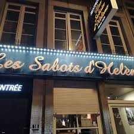

CityLoop Quest Liège


La Batte est le grand théâtre gourmand du dimanche matin. Fruits, fromages, olives, fleurs, livres et vêtements se mélangent le long des quais. On y vient pour faire ses courses, mais aussi pour prendre la température de la ville, écouter les marchands et croiser des familles entières.
Les brasseries liégeoises gardent une culture du plat roboratif. Boulet-frites, boulets sauce lapin, carbonnades, salades solides et bières locales forment un répertoire sans chichis. Le service peut être direct ; c’est souvent le signe qu’on est au bon endroit.
Le café et la pause sucrée comptent aussi. Une gaufre chaude près d’une rue commerçante, un lacquemant de foire ou un verre de pèkèt lors d’une fête locale donnent un accès immédiat à une sociabilité liégeoise : simple, vive, parfois moqueuse, rarement distante.
Pour bien manger à Liège, évitez de chercher uniquement l’adresse “parfaite”. Regardez où les tables parlent fort, où les habitués commandent sans menu, où les portions ne font pas semblant. La ville récompense moins les attitudes précieuses que la curiosité et l’appétit.